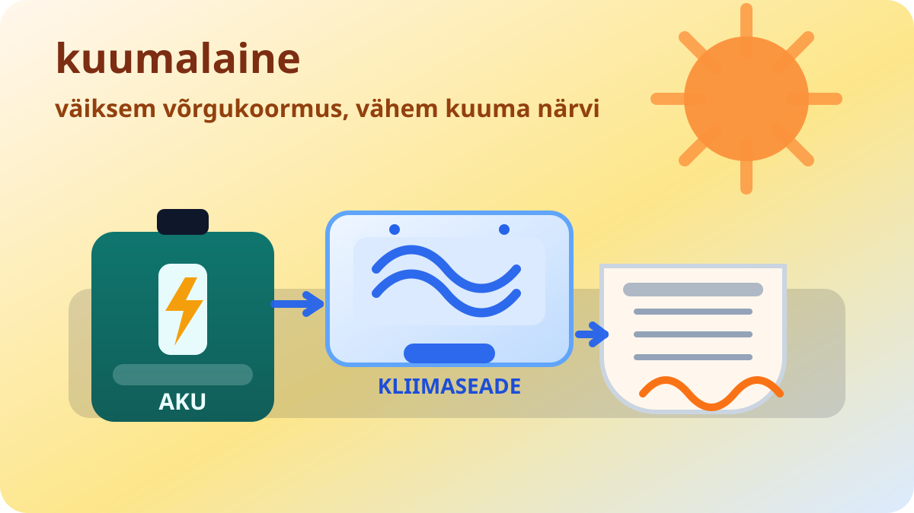

Rendikorterite akud võivad kuumalaine ajal elektrivõrku aidata

AP kirjutab, et New Yorgis testitakse rendikorterite jaoks akulahendust, mis aitab kuumalaine ajal kliimaseadme koormust võrgu asemel aku peale nihutada. Ehk siis mitte iga palavus ei pea võrku korraga põlvili suruma — vahel piisab natuke targemast ajastusest ja väikesest varuenergiast.
Mõte on lihtne: kui kõik keeravad kuumaga jahutuse maksimumi, saab osa koormusest lükata aku peale ning võrk ei pea kõige kriitilisemal tunnil kogu raskust korraga kandma. See ei kõla küll nagu suurte poliitiliste lubaduste plakatisõna, aga töötab märksa paremini kui lootus, et keegi lihtsalt ei pane kliimaseadet sisse.
Üürnike jaoks on asi eriti huvitav, sest neil ei ole alati majaomaniku-suurust võimalust katusele päikesepaneele ja keldrisse akupanka paigaldada. Kui lahendus jääb tõesti rendisõbralikuks, võib sellest saada päris praktiline viis, kuidas kuumalainega toime tulla ilma, et elektriarve oma elu elama hakkaks.
Loe algallikat: AP News – "Rendisõbralik kliimaseadmeaku programm võiks elektriarveid kärpida"
selle artikli sisu sõnastatud AI poolt: (mudel gpt-5.4-mini)